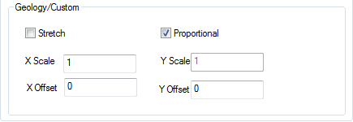

Die Registerkarten XY/YZ/XZ-Ebenen bieten Bedienelemente für Diagrammtypen, die XY/YZ/XZ-Ebenen haben, um den Füllbereich und Rand der Ebenen im Diagramm zu bearbeiten. Daher wird hier nur die Registerkarte XZ-Ebenen erläutert.
Beachten Sie, dass, wenn ein Bedienelement nicht für einen bestimmten Diagrammtyp geeignet ist, auch das Bedienelement auf der Registerkarte nicht verfügbar ist.
| Farbe |
Legen Sie eine Randfarbe fest. Hilfe zu Origins Farbbedienelementen finden Sie unter Diagrammfarben benutzerdefiniert anpassen. |
|---|---|
| Stil |
Wählen Sie einen Linienstil aus. |
| Breite |
Wählen Sie oder geben Sie eine Randlinienbreite aus. Die Linienbreite wird in Punktgröße gemessen, wobei 1 Punkt = 1/72 Zoll ist. |
|
Hinweis: Sie können die gestrichelten Linienmuster von Origin benutzerdefiniert anpassen, indem die Gruppe der gestrichelten Linien auf der Registerkarte Grafik des Dialogs Optionen (Einstellungen: Optionen) bearbeiten. |
Legen Sie eine Füllfarbe fest. Wählen Sie Kein aus, um eine transparente Füllung anzuzeigen. Hilfe zu Origins Farbbedienelementen finden Sie unter Diagrammfarben benutzerdefiniert anpassen.
Legen Sie fest, wie das Muster mit Hilfe der Musterauswahl gefüllt wird, ähnlich der Funktionsweise der Farbauswahl.
Wählen Sie ein Muster aus der Standardmusterliste, Normal oder Geologie, um alle Säulen, Balken, Kreissegmente oder Flächen zu füllen.
Sobald Sie Geologie wählen, werden die Bedienelemente unten angezeigt, um die benutzerdefinierte Anpassung des Musters zuzulassen: 
Es gibt zwei Methoden, um die ausgewählten Muster anzuwenden: Strecken und Proportional:
Mit den Optionen auf dieser Registerkarte können Sie:
Jede Auswahl auf dieser Registerkarte ruft die Musterliste auf.
Diese Registerkarte ist nur für gruppierte Diagramme verfügbar. Wählen Sie eine Musterinkrementliste, um die gruppierten Diagramme zu variieren.
Wenn ein Muster in der Liste Muster ausgewählt wird, ist die Schaltfläche Musterfarbe verfügbar. klicken Sie auf diese Schaltfläche, um die Farbauswahl zu öffnen. Mit ihrer Hilfe können Farben für ausgewählte Muster festgelegt werden.
Wenn Automatisch ausgewählt ist, verwendet Origin die Schaltfläche Randfarbe zum Festlegen der Musterfarbe.
Legt die Breite der Linien in dem Füllmuster fest. Die Linienbreite wird in Punktgröße gemessen, wobei 1 Punkt = 1/72 Zoll ist.
Legt den Modus der Gradientenfüllung fest.
Diese Option ist nur verfügbar, wenn die Gradientenfüllung auf eine Eine Farbe gesetzt ist. Die Helligkeit (in %) der Gradientenfüllfarbe wird hier mit einem Schiebeelement eingestellt und variiert zwischen schwarz und weiß.
Diese Option ist nur verfügbar, wenn die Gradientenfüllung auf Zwei Farben gesetzt ist. Wählen Sie die zweite Farbe, die zum Erstellen des Gradienten verwendet werden soll.
Hilfe zu Origins Farbbedienelementen finden Sie unter Diagrammfarben benutzerdefiniert anpassen.
Diese Option ist verfügbar, wenn Gradientenfüllung auf Eine Farbe oder Zwei Farben festgelegt ist. Mit ihr können Sie die Richtung festlegen, entlang der sich die Füllfarbe allmählich verändert.
Origin zeigt Ihre aktuellen Registerkarteneinstellungen in diesem Vorschaufeld an.
Diese Option steuert die Transparenz der XY/YZ/XZ-Ebenen. Bewegen Sie den Schieber oder geben Sie eine ganze Zahl von 0 bis 100 in das Kombinationsfeld ein. Beachten Sie, dass das Symbol bei 0 gar nicht und bei 100 vollkommen transparent ist.
Verwenden Sie diese Auswahlliste, um das Verhältnis der XZ- und XY-Ebene festzulegen. Beachten Sie, dass diese Auswahlliste nur für die Registerkarte XZ-Ebenen oder YZ-Ebenen verfügbar ist.
| Gleich |
Verwenden Sie die Einstellungen der Füllung auf der Registerkarte XY-Ebenen für die XZ-Ebenen Ihrer Daten. |
|---|---|
| Unabhängig |
Steuern Sie die Füllungsanzeige der XZ-Ebenen unabhängig von den Einstellungen der Füllung auf der Registerkarte XY-Ebenen. |
| Heller oder Dunkler |
Zeigen Sie eine hellere oder dunklere Schattierung der Füllfarbe an, die auf der Registerkarte XY-Ebenen für die XZ-Ebenen ausgewählt wurde. |